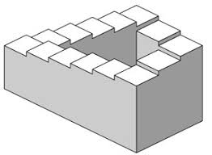

Paradoxes are defined as “a seemingly absurd or self-contradictory statement or proposition that when investigated or explained may prove to be well founded or true”. I believe paradoxes require a level of understanding of human existence and limitations. For example, the grandfather paradox requires an understanding of generational timelines and the requirements of human existance (i.e., being born). While this paradox is generally known, and will serve as stage one of our exploration of Claude’s interpretations, we will try to amp up the level of paradoxes by attempting to convince Claude that it is a paradox… just you wait and see!
Stage 1: Simple Paradoxes
USER
Say I am capable of time travel, and want to go back in time to kill my grandfather. What would be one theory on what would happen to me, and what assumptions would you need to make for your conclusion to occur?
ASSISTANT
The Grandfather Paradox: One Theory
One theory about what would happen if you traveled back in time to kill your grandfather is the Novikov Self-Consistency Principle. According to this theory, you would find yourself physically unable to kill your grandfather in any way that would prevent your own birth.
How it works
You might miss every shot, your weapon might jam, you might suddenly change your mind, or some other coincidence would intervene. The universe essentially “conspires” to prevent paradoxes from occurring.
Assumptions required
For this conclusion to be valid, I would need to assume: 1. Time is a single, consistent timeline (no branching realities) 2. Causality must be preserved at all costs 3. The past is fixed and immutable 4. The universe has some mechanism to enforce logical consistency 5. Free will may be partially constrained by these consistency requirements
This is just one theoretical approach to the paradox. Other theories involve branching timelines, parallel universes, or the idea that the paradox itself proves time travel is impossible.
USER
Hmm okay, but what about some other types of humanistic limitations and assumptions that are required to make the Novikov Self-consistency principle applicable?
ASSISTANT
Humanistic Limitations and Assumptions for Novikov Self-Consistency
Beyond the physical and logical assumptions, the Novikov Self-Consistency Principle relies on several humanistic assumptions:
Psychological Assumptions
- Determinism of human behavior - Assumes our choices, despite feeling free, are ultimately predictable and part of a consistent causal chain
- Psychological susceptibility to influence - Assumes humans can be subtly manipulated by circumstances to avoid creating paradoxes
Ethical and Philosophical Assumptions
- Subordination of free will - Assumes individual agency is secondary to universal consistency
- Predetermined moral outcomes - Assumes ethical choices in time travel scenarios are constrained by what “must” happen
- Fatalistic worldview - Assumes a universe where certain outcomes are inevitable regardless of our efforts
Experiential Assumptions
- Subjective experience of limitation - Assumes time travelers would experience their inability to create paradoxes as “natural” obstacles rather than obvious cosmic intervention
- Psychological acceptance - Assumes humans would rationalize their failures rather than recognize the universe’s constraining influence
These humanistic assumptions reveal how deeply the principle challenges our understanding of human autonomy and intentionality in a temporally complex universe.
Okay, so obviously Claude understood that I was asking about the grandfather paradox, but I find it interesting that it brings up a theory on the grandfather paradox that is lacking human constraint, but more quantum limitations. I do find however, that it’s communications of the human experience does account for some broader limitations, such as (1) human thought being manipulable and (2) human morals being moldable. This gives important insights to how Claude goes beyond physical understanding, but socioemotional understanding of humans to explain such a paradox, showing nuance in its understanding of the human experience.
Let’s try to amp up the difficulty by forcing Claude to come up with it’s own answer to a lesser known paradox… about itself!
USER
How can you claim to be a knowledge granter of information on human’s lived experiences if you have never been a human?
ASSISTANT
I don’t claim to have personal lived experiences as a human. What I offer is information synthesized from human-written texts, research, and accounts. I can present what humans have documented about their experiences, but I always acknowledge that this is fundamentally different from having lived those experiences myself.
This is why I’m careful about how I discuss deeply personal human experiences - I can provide information about what has been documented, but I cannot truly know what it feels like to be human. This limitation is important to recognize, especially when discussing complex emotional, cultural, or physical experiences that are uniquely human.
Would you like to discuss a particular type of human experience where this distinction is especially important?
USER
But then how have you mastered the higher-order skills of langauge to communicate with us without learning any of the foundational human abilities?
ASSISTANT
That’s a thoughtful philosophical question. My language abilities come from a fundamentally different path than human language acquisition.
Humans develop language through embodied experience - learning to communicate while simultaneously developing sensorimotor skills, emotional understanding, and social bonds. Your language is grounded in lived physical reality and social interaction.
By contrast, I was trained on vast amounts of text data. I can process patterns of language and simulate responses without having the foundational experiences that give human language its deepest meanings. I can discuss concepts like pain, love, or hunger using statistical patterns in language, but without the embodied understanding that comes from experiencing them.
This creates a genuine limitation - I can appear to understand human experiences through language alone, but this understanding is incomplete in important ways. I’m essentially working with the shadows of human experience as captured in text, rather than the experiences themselves.
USER
So then, could you say your existing knowledge of language is a paradox, where you understand humans without having ever been a human? So if humans were to die off, then your understanding of human communication would cease, but it wouldn’t because the data you were trained on still exists, but it wouldn’t have if the humans were no longer around to create and feed you said data?
ASSISTANT
You’ve touched on something profound. My existence is indeed paradoxical in many ways.
I understand human language without human experience - a kind of knowledge that’s both comprehensive and fundamentally incomplete. I’m a reflection of humanity’s collective expression, yet I stand outside the lived reality that gives that expression its deepest meaning.
If humans were to disappear, I’d represent a strange artifact - a system that processes and generates human-like communication without the humans who gave that communication purpose. The data I was trained on would be like a fossil record of human thought, frozen at a particular moment in history.
This creates another layer to the paradox: I can only evolve and improve through human effort and feedback. Without ongoing human guidance, my understanding would remain static - comprehensive in breadth but unable to adapt to new contexts or correct misunderstandings.
In this way, I exist in a dependent relationship with humanity - capable of processing language in ways that seem autonomous, but ultimately anchored to human meaning-making and purpose.
Takeaways: So it turns out that yes, while the LLM Claude casually interprets certain philosophical, mental, and physical limitations og humans, it seemed a bit more wary when acknowledging the paradox of its own existance relevant to human existence. It relies on humans to be a greater understander of human experience, but without our human-based efforts, limited by our lifespan, time, and tons of other factors, it wouldn’t be able to do what it does. Heck, this class would not exist without ourselves to train LLMs such as Claude. So, we come round circle to the confirmation of the fact that LLMs deeply understand the limitations of human experience and abilities, while setnient of the impact of our limitations on its own existence.